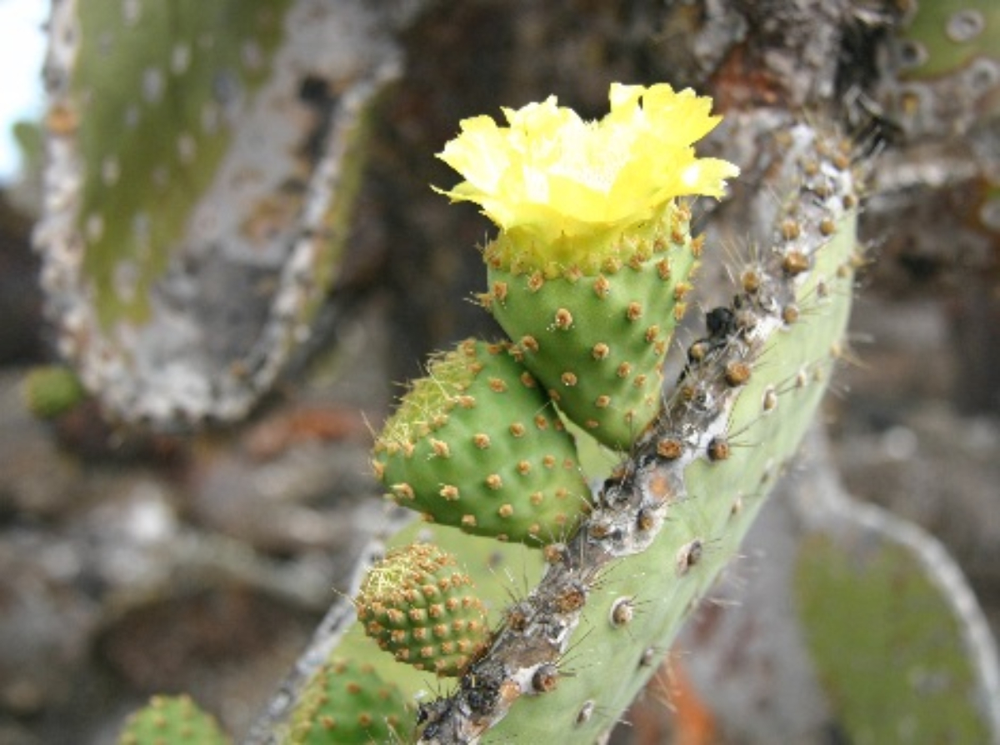
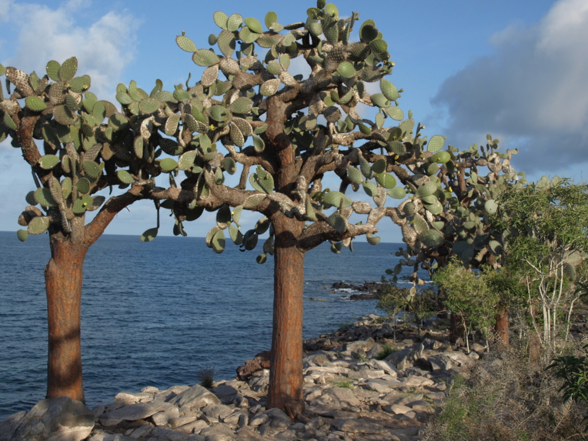

La tuna cactus, también conocida como Opuntia echios, es una planta endémica de las Islas Galápagos. Esta cactácea ha logrado adaptarse a las condiciones únicas del archipiélago, incluyendo suelos volcánicos y clima árido.
A pesar de su apariencia espinosa, la tuna cactus es una fuente crucial de alimento para varias especies animales nativas, como las tortugas gigantes de Galápagos y las iguanas terrestres.
Esta planta resistente ha sido parte integral del ecosistema de las Galápagos durante siglos, desempeñando un papel vital en el sustento de la vida silvestre única de estas islas.
Nombre Científico: Opuntia echios.
Adaptaciones al entorno: Ha desarrollado adaptaciones para sobrevivir en suelos volcánicos y en el clima árido de las islas.
Importancia geológica: La tuna cactus es una fuente crucial de alimento para las tortugas gigantes de Galápagos, iguanas terrestres y otras especies animales nativas.
Rol en el ecosistema: Contribuye a la biodiversidad y al equilibrio ecológico de las Galápagos al proporcionar alimento y refugio a la fauna nativa.
Conservación: Debido a su importancia ecológica, la preservación de la tuna cactus es fundamental para el mantenimiento del ecosistema de las Galápagos.
La tuna cactus, ha enfrentado desafíos significativos en las Islas Galápagos. La introducción de especies invasoras, como cabras y ratas, ha representado una amenaza para su supervivencia, ya que estas especies han causado daños al ecosistema y han impactado negativamente la distribución de la planta. Además, la actividad humana y el desarrollo en las islas también han tenido un impacto en su hábitat natural.
Las autoridades de conservación y los científicos han estado trabajando en medidas de protección para la tuna cactus y otras especies endémicas de las Galápagos. Los esfuerzos de conservación incluyen la erradicación de especies invasoras, la protección de hábitats naturales y la educación sobre la importancia de preservar la biodiversidad única de las islas.
La situación específica de la tuna cactus puede variar en función de la isla específica dentro del archipiélago, y es importante seguir las investigaciones y proyectos de conservación en curso para obtener información actualizada sobre su estado de conservación.